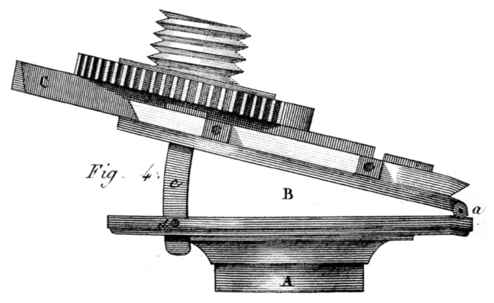
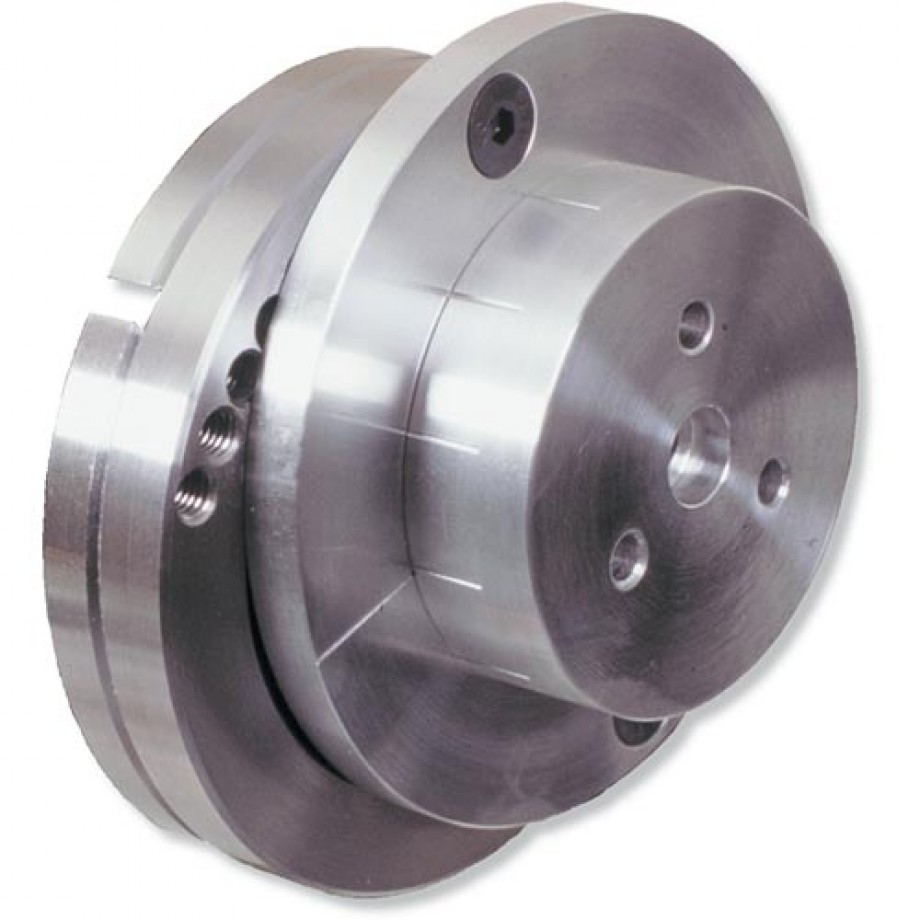
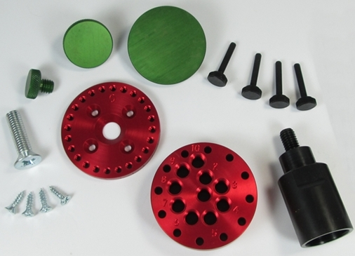

|
|

|
Eccentric Chuck |
Overview

Eccentric & Oblique Chuck Manuel du Tourneur, Volume of Plates plate XXXVII, figure 4  Image courtesy Axminister Tools & Machinery  Image courtesy Niles Bottle Stoppers An Eccentric Chuck is used for holding an object off-center from the axis of rotation. On high speed lathes, great care must be taken to balance the work when running eccentrically, but, on an rose engine lathe, the rotation is significantly slower so this is not an issue. That is why home made versions are so easily made. The eccentric chuck shown to the left could also be inclined as shown, making it also an oblique chuck. Barbara Dill is an artist and woodturner who makes many great pieces using multi-axis turning. Whilst she does not use an ornamental lathe, her works can be great inspiration for the ornamental turner. Some modern eccentric chucks designed for higher speed lathes include the ones shown on the left, but they can certainly be used on a rose engine lathe.
| |
Additional pictures of this deviceJon Magill demonstrated the eccentric chuck shown below at the 2016 AAW International Symposium in Atlanta. 

Home-made Eccentric Chuck Images courtesy Jon Magill | |
Notes on making oneBill Ooms made one using Corian. This video shows how he did it. | |
More Information
|